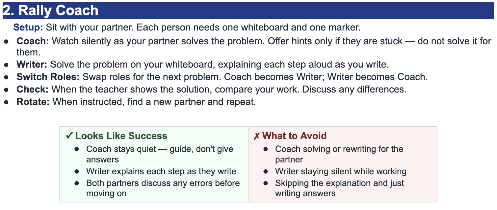

Find the equation of the tangent line to \(f(x)=(x+1)\sin x\) at \(x=0\).
Use the product rule first.
\[ f'(x)=1\cdot\sin x+(x+1)\cos x \]Evaluate the derivative at \(x=0\) to get the slope.
\[ f'(0)=\sin 0+(0+1)\cos 0=0+1=1 \]Find the point using the original function.
\[ f(0)=(0+1)\sin 0=0 \]The point is \((0,0)\), and the slope is \(1\).
\[ y-0=1(x-0) \] \[ y=x \]Find the equation of the tangent line to \(g(x)=\cos x(x^2-1)\) at \(x=0\).
Use the product rule with \(u=\cos x\) and \(v=x^2-1\).
\[ g'(x)=-\sin x(x^2-1)+\cos x(2x) \]Evaluate the derivative at \(x=0\).
\[ g'(0)=-\sin 0((0)^2-1)+\cos 0(2\cdot0)=0 \]Find the point using the original function.
\[ g(0)=\cos 0((0)^2-1)=-1 \]The point is \((0,-1)\), and the slope is \(0\).
\[ y+1=0(x-0) \] \[ y=-1 \]For \(h(x)=(2x^2-x+1)\sin x\), find the slope of the tangent line at \(x=0\).
The slope of the tangent line at \(x=0\) is \(h'(0)\).
\[ h'(x)=(4x-1)\sin x+(2x^2-x+1)\cos x \]Now evaluate at \(x=0\).
\[ h'(0)=(4\cdot0-1)\sin 0+(2(0)^2-0+1)\cos 0=1 \]The slope of the tangent line is \(1\).
Find the equation of the tangent line to \(p(x)=(x^2+2x)\cos x\) at \(x=\dfrac{\pi}{2}\).
Use the product rule.
\[ p'(x)=(2x+2)\cos x-(x^2+2x)\sin x \]Evaluate the derivative at \(x=\dfrac{\pi}{2}\).
\[ p'\left(\frac{\pi}{2}\right)=\left(\pi+2\right)\cos\left(\frac{\pi}{2}\right)-\left(\frac{\pi^2}{4}+\pi\right)\sin\left(\frac{\pi}{2}\right) \] \[ p'\left(\frac{\pi}{2}\right)=-\left(\frac{\pi^2}{4}+\pi\right) \]Find the point on the graph.
\[ p\left(\frac{\pi}{2}\right)=\left(\frac{\pi^2}{4}+\pi\right)\cos\left(\frac{\pi}{2}\right)=0 \]The point is \(\left(\dfrac{\pi}{2},0\right)\), and the slope is \(-\left(\dfrac{\pi^2}{4}+\pi\right)\).
\[ y=-\left(\frac{\pi^2}{4}+\pi\right)\left(x-\frac{\pi}{2}\right) \]A student says the slope of the tangent line to \(f(x)=(x+2)\cos x\) at \(x=\pi\) is \(f(\pi)=-(\pi+2)\). Explain the mistake and find the correct tangent line.
The mistake is using \(f(\pi)\) as the slope. The value \(f(\pi)\) gives the \(y\)-coordinate of the point. The slope comes from \(f'(\pi)\).
\[ f'(x)=1\cdot\cos x-(x+2)\sin x \] \[ f'(\pi)=\cos \pi-(\pi+2)\sin \pi=-1 \]Now find the point.
\[ f(\pi)=(\pi+2)\cos \pi=-(\pi+2) \]The point is \((\pi,-(\pi+2))\), and the slope is \(-1\).
\[ y+(\pi+2)=-1(x-\pi) \] \[ y=-x-2 \]Find the equation of the tangent line to \(y=(3x^2-x+4)\sin x\) at \(x=-\dfrac{\pi}{2}\).
Differentiate using the product rule.
\[ y'=(6x-1)\sin x+(3x^2-x+4)\cos x \]Evaluate the derivative at \(x=-\dfrac{\pi}{2}\).
\[ y'\left(-\frac{\pi}{2}\right)=\left(6\left(-\frac{\pi}{2}\right)-1\right)\sin\left(-\frac{\pi}{2}\right)+\left(\frac{3\pi^2}{4}+\frac{\pi}{2}+4\right)\cos\left(-\frac{\pi}{2}\right) \] \[ y'\left(-\frac{\pi}{2}\right)=3\pi+1 \]Find the point on the graph.
\[ y\left(-\frac{\pi}{2}\right)=\left(\frac{3\pi^2}{4}+\frac{\pi}{2}+4\right)\sin\left(-\frac{\pi}{2}\right)=-\left(\frac{3\pi^2}{4}+\frac{\pi}{2}+4\right) \]The tangent line is
\[ y+\left(\frac{3\pi^2}{4}+\frac{\pi}{2}+4\right)=(3\pi+1)\left(x+\frac{\pi}{2}\right) \]Find the equation of the tangent line to \(f(x)=(x+1)\sin x\) at \(x=\dfrac{\pi}{2}\).
Differentiate first.
\[ f'(x)=\sin x+(x+1)\cos x \]Evaluate the derivative at \(x=\dfrac{\pi}{2}\).
\[ f'\left(\frac{\pi}{2}\right)=\sin\left(\frac{\pi}{2}\right)+\left(\frac{\pi}{2}+1\right)\cos\left(\frac{\pi}{2}\right)=1 \]Find the point on the graph.
\[ f\left(\frac{\pi}{2}\right)=\left(\frac{\pi}{2}+1\right)\sin\left(\frac{\pi}{2}\right)=\frac{\pi}{2}+1 \]The point is \(\left(\dfrac{\pi}{2},\dfrac{\pi}{2}+1\right)\), and the slope is \(1\).
\[ y-\left(\frac{\pi}{2}+1\right)=1\left(x-\frac{\pi}{2}\right) \] \[ y=x+1 \]Find the equation of the tangent line to \(k(x)=(x^2+1)(x-2)\) at \(x=-1\).
Use the product rule on the two polynomial factors.
\[ k'(x)=2x(x-2)+(x^2+1)(1) \]Evaluate the derivative at \(x=-1\).
\[ k'(-1)=2(-1)(-3)+((-1)^2+1)=6+2=8 \]Find the point.
\[ k(-1)=((-1)^2+1)(-1-2)=2(-3)=-6 \]The point is \((-1,-6)\), and the slope is \(8\).
\[ y+6=8(x+1) \] \[ y=8x+2 \]For \(m(x)=(x^2+1)\sin x\), find the slope of the tangent line at \(x=\pi\).
The slope is \(m'(\pi)\).
\[ m'(x)=2x\sin x+(x^2+1)\cos x \]Evaluate at \(x=\pi\).
\[ m'(\pi)=2\pi\sin\pi+(\pi^2+1)\cos\pi=0-(\pi^2+1) \] \[ m'(\pi)=-(\pi^2+1) \]The slope of the tangent line is \(-\pi^2-1\).
Find the equation of the tangent line to \(y=\sin x(2x^2-3x+1)\) at \(x=-\dfrac{\pi}{2}\).
Use the product rule.
\[ y'=\cos x(2x^2-3x+1)+\sin x(4x-3) \]Evaluate the derivative at \(x=-\dfrac{\pi}{2}\).
\[ y'\left(-\frac{\pi}{2}\right)=\cos\left(-\frac{\pi}{2}\right)\left(\frac{\pi^2}{2}+\frac{3\pi}{2}+1\right)+\sin\left(-\frac{\pi}{2}\right)(-2\pi-3) \] \[ y'\left(-\frac{\pi}{2}\right)=2\pi+3 \]Find the point.
\[ y\left(-\frac{\pi}{2}\right)=\sin\left(-\frac{\pi}{2}\right)\left(\frac{\pi^2}{2}+\frac{3\pi}{2}+1\right)=-\left(\frac{\pi^2}{2}+\frac{3\pi}{2}+1\right) \]The tangent line is
\[ y+\left(\frac{\pi^2}{2}+\frac{3\pi}{2}+1\right)=(2\pi+3)\left(x+\frac{\pi}{2}\right) \]Find the equation of the tangent line to \(y=\cos x(2x^2-1)\) at \(x=-\pi\).
Differentiate using the product rule.
\[ y'=-\sin x(2x^2-1)+\cos x(4x) \]Evaluate at \(x=-\pi\).
\[ y'(-\pi)=-\sin(-\pi)(2\pi^2-1)+\cos(-\pi)(-4\pi)=4\pi \]Find the point.
\[ y(-\pi)=\cos(-\pi)(2\pi^2-1)=1-2\pi^2 \]The point is \((-\pi,1-2\pi^2)\), and the slope is \(4\pi\).
\[ y-(1-2\pi^2)=4\pi(x+\pi) \]Find the equation of the tangent line to \(q(x)=(x^2+1)\sin x\) at \(x=\dfrac{\pi}{2}\).
Find the derivative first.
\[ q'(x)=2x\sin x+(x^2+1)\cos x \]Evaluate at \(x=\dfrac{\pi}{2}\).
\[ q'\left(\frac{\pi}{2}\right)=2\left(\frac{\pi}{2}\right)(1)+\left(\frac{\pi^2}{4}+1\right)(0)=\pi \]Find the point.
\[ q\left(\frac{\pi}{2}\right)=\left(\frac{\pi^2}{4}+1\right)(1)=\frac{\pi^2}{4}+1 \]The tangent line is
\[ y-\left(\frac{\pi^2}{4}+1\right)=\pi\left(x-\frac{\pi}{2}\right) \]Find the equation of the tangent line to \(r(x)=(x^3-2x+5)\cos x\) at \(x=-\pi\).
Use the product rule.
\[ r'(x)=(3x^2-2)\cos x-(x^3-2x+5)\sin x \]Evaluate the derivative at \(x=-\pi\).
\[ r'(-\pi)=(3\pi^2-2)\cos(-\pi)-(-\pi^3+2\pi+5)\sin(-\pi)=2-3\pi^2 \]Find the point.
\[ r(-\pi)=(-\pi^3+2\pi+5)\cos(-\pi)=\pi^3-2\pi-5 \]The point is \((-\pi,\pi^3-2\pi-5)\), and the slope is \(2-3\pi^2\).
\[ y-(\pi^3-2\pi-5)=(2-3\pi^2)(x+\pi) \]A motion model is \(s(t)=(t^2+1)\sin t\). Find the tangent line at \(t=0\), then explain what the slope means.
Differentiate using the product rule.
\[ s'(t)=2t\sin t+(t^2+1)\cos t \]Evaluate at \(t=0\).
\[ s'(0)=0+(1)(1)=1 \]Find the point.
\[ s(0)=1\cdot\sin 0=0 \]The tangent line is
\[ y=t \]The slope \(1\) means the position is increasing at an instantaneous rate of \(1\) unit of position per unit of time at \(t=0\).
Find the equation of the tangent line to \(y=\sin x(x^2-4x+2)\) at \(x=-\dfrac{\pi}{2}\).
Use the product rule.
\[ y'=\cos x(x^2-4x+2)+\sin x(2x-4) \]Evaluate at \(x=-\dfrac{\pi}{2}\).
\[ y'\left(-\frac{\pi}{2}\right)=\cos\left(-\frac{\pi}{2}\right)\left(\frac{\pi^2}{4}+2\pi+2\right)+\sin\left(-\frac{\pi}{2}\right)(-\pi-4) \] \[ y'\left(-\frac{\pi}{2}\right)=\pi+4 \]Find the point.
\[ y\left(-\frac{\pi}{2}\right)=\sin\left(-\frac{\pi}{2}\right)\left(\frac{\pi^2}{4}+2\pi+2\right)=-\left(\frac{\pi^2}{4}+2\pi+2\right) \]The tangent line is
\[ y+\left(\frac{\pi^2}{4}+2\pi+2\right)=(\pi+4)\left(x+\frac{\pi}{2}\right) \]Determine whether \(q(x)=(x^2+3)(x-1)\) has a horizontal tangent line at \(x=1\). If not, state the slope and write the tangent line.
A horizontal tangent line has slope \(0\), so check \(q'(1)\).
\[ q'(x)=2x(x-1)+(x^2+3) \] \[ q'(1)=2(1)(0)+(1^2+3)=4 \]So the tangent is not horizontal. Find the point.
\[ q(1)=(1^2+3)(1-1)=0 \]The point is \((1,0)\), and the slope is \(4\).
\[ y-0=4(x-1) \] \[ y=4x-4 \]Find the equation of the tangent line to \(f(x)=(x^2-1)\sin x\) at \(x=\dfrac{\pi}{2}\).
Differentiate first.
\[ f'(x)=2x\sin x+(x^2-1)\cos x \]Evaluate the derivative.
\[ f'\left(\frac{\pi}{2}\right)=2\left(\frac{\pi}{2}\right)(1)+\left(\frac{\pi^2}{4}-1\right)(0)=\pi \]Find the point.
\[ f\left(\frac{\pi}{2}\right)=\left(\frac{\pi^2}{4}-1\right)(1)=\frac{\pi^2}{4}-1 \]The tangent line is
\[ y-\left(\frac{\pi^2}{4}-1\right)=\pi\left(x-\frac{\pi}{2}\right) \]A student says the tangent line to \(f(x)=(x+2)\cos x\) at \(x=-\pi\) is \(y=(\pi-2)x\). Identify the error and write the correct tangent line.
The student used the point value as a slope. The slope must come from \(f'(-\pi)\), not from \(f(-\pi)\).
\[ f'(x)=\cos x-(x+2)\sin x \] \[ f'(-\pi)=\cos(-\pi)-(-\pi+2)\sin(-\pi)=-1 \] \[ f(-\pi)=(-\pi+2)\cos(-\pi)=\pi-2 \]The correct tangent line has slope \(-1\) and passes through \((-\pi,\pi-2)\).
\[ y-(\pi-2)=-1(x+\pi) \] \[ y=-x-2 \]Find the equation of the tangent line to \(y=(x^2+x+1)\sin x\) at \(x=-\dfrac{\pi}{2}\).
Use the product rule.
\[ y'=(2x+1)\sin x+(x^2+x+1)\cos x \]Evaluate at \(x=-\dfrac{\pi}{2}\).
\[ y'\left(-\frac{\pi}{2}\right)=(-\pi+1)\sin\left(-\frac{\pi}{2}\right)+\left(\frac{\pi^2}{4}-\frac{\pi}{2}+1\right)\cos\left(-\frac{\pi}{2}\right) \] \[ y'\left(-\frac{\pi}{2}\right)=\pi-1 \]Find the point.
\[ y\left(-\frac{\pi}{2}\right)=\left(\frac{\pi^2}{4}-\frac{\pi}{2}+1\right)\sin\left(-\frac{\pi}{2}\right)=-\left(\frac{\pi^2}{4}-\frac{\pi}{2}+1\right) \]The tangent line is
\[ y+\left(\frac{\pi^2}{4}-\frac{\pi}{2}+1\right)=(\pi-1)\left(x+\frac{\pi}{2}\right) \]Find the equation of the tangent line to \(F(x)=(2x^3-x+4)\sin x\) at \(x=\pi\).
Differentiate using the product rule.
\[ F'(x)=(6x^2-1)\sin x+(2x^3-x+4)\cos x \]Evaluate the derivative at \(x=\pi\).
\[ F'(\pi)=(6\pi^2-1)\sin\pi+(2\pi^3-\pi+4)\cos\pi \] \[ F'(\pi)=-(2\pi^3-\pi+4) \]Find the point on the graph.
\[ F(\pi)=(2\pi^3-\pi+4)\sin\pi=0 \]The point is \((\pi,0)\), and the slope is \(-(2\pi^3-\pi+4)\).
\[ y=-(2\pi^3-\pi+4)(x-\pi) \]